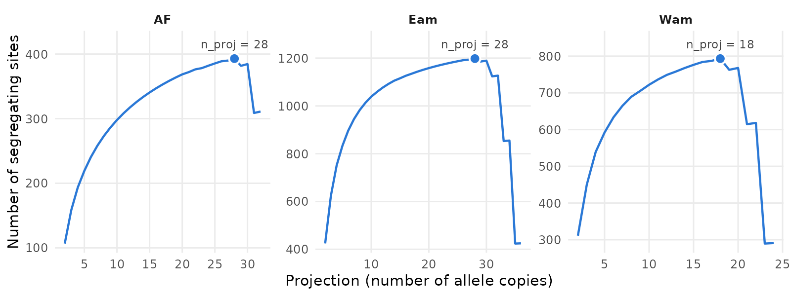
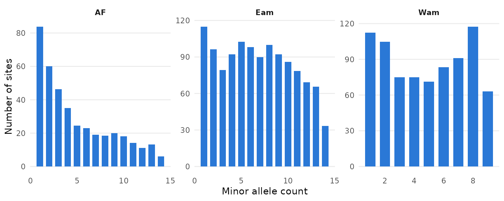
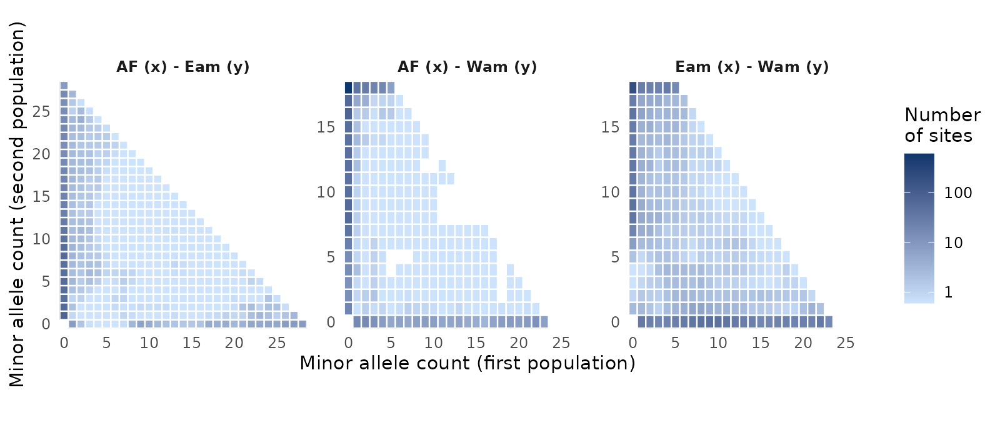
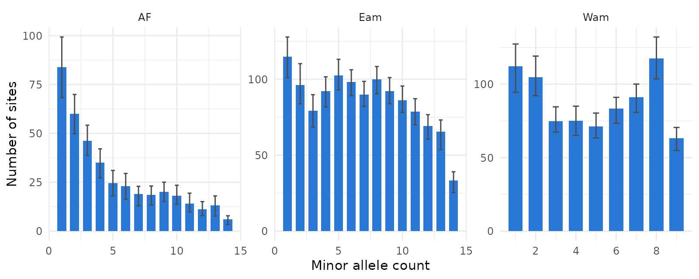

The site frequency spectrum (SFS) counts the number of sites at which
an allele is found in 1, 2, 3, … copies in a sample. Joint spectra do
the same for several populations at once. They are the input of
demographic inference with dadi, moments or
fastsimcoal2.
The main difficulty with real data is missing genotypes: different
sites are genotyped in a different number of individuals.
tidypopgen deals with them as easySFS does.
Each population is projected down to a fixed number of allele
copies, by computing for every site the probability of each allele count
in a random subsample of that size. Sites with fewer genotyped copies
are dropped. This article shows the whole workflow:
- choosing the projection;
- computing and plotting the spectra;
- estimating their uncertainty with a block bootstrap;
- exporting them for
dadiandfastsimcoal2.
The data
We use the RAD-seq data of Anolis punctatus lizards shipped
with the package (see the vignette ‘Population genetic analysis with
tidypopgen’). We group the 46 individuals into three populations: the
Atlantic Forest (AF), and the eastern (Eam)
and western (Wam) Amazonian Forest.
library(tidypopgen)
#> Loading required package: dplyr
#>
#> Attaching package: 'dplyr'
#> The following objects are masked from 'package:stats':
#>
#> filter, lag
#> The following objects are masked from 'package:base':
#>
#> intersect, setdiff, setequal, union
#> Loading required package: tibble
vcf_path <-
system.file("/extdata/anolis/punctatus_t70_s10_n46_filtered.recode.vcf.gz",
package = "tidypopgen"
)
anole_gt <-
gen_tibble(vcf_path, quiet = TRUE, backingfile = tempfile("anolis_"))
pops_path <- system.file("/extdata/anolis/punctatus_n46_meta.csv",
package = "tidypopgen"
)
pops <- read.csv(pops_path)
anole_gt <- anole_gt %>%
left_join(pops, by = "id") %>%
group_by(pop)As usual for RAD-seq data, many genotypes are missing.
loci_missingness() gives the proportion of missing
genotypes at each SNP in each population. Only 4 to 10% of the genotypes
are missing (mean_missing), but they are spread over many
SNPs: in the two Amazonian populations, about two thirds of the SNPs are
missing in at least one individual (prop_snps_missing):
anole_gt %>%
loci_missingness(type = "tidy") %>%
group_by(group) %>%
summarise(
mean_missing = mean(value),
prop_snps_missing = mean(value > 0)
)
#> # A tibble: 3 × 3
#> group mean_missing prop_snps_missing
#> <chr> <dbl> <dbl>
#> 1 AF 0.0412 0.231
#> 2 Eam 0.0811 0.660
#> 3 Wam 0.0965 0.655SNPs found on the same RAD locus are tightly linked. By default,
easySFS keeps a single random SNP per RAD locus. Here the
RAD loci are recorded as chromosomes, so we do the same
with select_loci():
set.seed(123)
one_per_locus <- show_loci(anole_gt) %>%
mutate(index = row_number()) %>%
group_by(chromosome) %>%
slice_sample(n = 1) %>%
pull(index)
anole_thin <- anole_gt %>% select_loci(all_of(sort(one_per_locus)))
count_loci(anole_thin)
#> [1] 1920Choosing the projection
Projecting to more allele copies gives a finer spectrum, with more
rare variants, but drops more sites with missing data.
pop_sfs_preview(), the equivalent of
easySFS --preview, gives the number of segregating sites
for each possible projection of each population:
preview <- pop_sfs_preview(anole_thin)
autoplot(preview)
Following the dadi manual, a good choice maximises the
number of segregating sites. The best column marks that
projection for each population, which is what all the SFS functions use
when n_proj is not given:
One-dimensional spectra
pop_sfs() computes the spectrum of each population. As
n_proj is not given, a message reports the projections it
chose:
sfs_1d <- pop_sfs(anole_thin)
#> `n_proj` not given; each group is projected to the number of allele copies that maximises its number of segregating sites (see pop_sfs_preview()): AF = 28, Eam = 28, Wam = 18
sfs_1d
#> # A tibble: 77 × 4
#> group allele_count n_sites masked
#> <chr> <int> <dbl> <lgl>
#> 1 AF 0 1469. TRUE
#> 2 AF 1 83.8 FALSE
#> 3 AF 2 60.0 FALSE
#> 4 AF 3 46.3 FALSE
#> 5 AF 4 35.1 FALSE
#> 6 AF 5 24.6 FALSE
#> 7 AF 6 23.0 FALSE
#> 8 AF 7 19.0 FALSE
#> 9 AF 8 18.5 FALSE
#> 10 AF 9 20.0 FALSE
#> # ℹ 67 more rows
autoplot(sfs_1d)
The spectra are folded by default (they count copies of the minor
allele), as the ancestral allele is rarely known. With
folded = FALSE, the reference allele is taken to be
ancestral (as in easySFS). You can also give the ancestral
allele of each locus, e.g. from an outgroup, with
ancestral. The output is a tidy tibble, with the
projections stored in its n_proj attribute.
The cells with no copies of the minor allele (sites monomorphic in
the projected sample), and those folded out, are masked (as
in dadi). They are not plotted by default.
Joint spectra
pairwise_pop_sfs() computes the joint spectrum of each
pair of populations. Each spectrum only uses the sites with enough
genotyped copies in both of its populations. It is plotted as a heatmap,
on a log scale:
n_proj <- attr(sfs_1d, "n_proj")
sfs_2d <- pairwise_pop_sfs(anole_thin, n_proj = n_proj)
autoplot(sfs_2d)
In all three pairs, most sites lie along the axes: their minor allele is found in only one of the two populations. The bottom row holds the variants of the first population that are absent from the second, and the left column those of the second population. The top left corner holds sites where the minor allele (across the pair) is common in the second population but rare in the first. The interior, where the two populations share variants at intermediate frequencies, holds fewer sites, and fewest in the two pairs that include the Atlantic Forest.
nwise_pop_sfs() computes the joint spectrum of all
populations. Its cells are listed in the order of the populations, with
the last one changing fastest (use fastest = "first" for
the opposite order):
sfs_3d <- nwise_pop_sfs(anole_thin, n_proj = n_proj)
sfs_3d
#> # A tibble: 15,979 × 5
#> AF Eam Wam n_sites masked
#> <int> <int> <int> <dbl> <lgl>
#> 1 0 0 0 0.0000000719 TRUE
#> 2 0 0 1 0.00000284 FALSE
#> 3 0 0 2 0.0000732 FALSE
#> 4 0 0 3 0.00534 FALSE
#> 5 0 0 4 0.122 FALSE
#> 6 0 0 5 1.27 FALSE
#> 7 0 0 6 6.63 FALSE
#> 8 0 0 7 20.1 FALSE
#> 9 0 0 8 35.9 FALSE
#> 10 0 0 9 42.6 FALSE
#> # ℹ 15,969 more rowsWith type = "array", all these functions return arrays
(sfs objects) instead of tibbles.
Uncertainty: block bootstrap
bootstrap_pop_sfs(),
bootstrap_pairwise_pop_sfs() and
bootstrap_nwise_pop_sfs() resample blocks of loci with
replacement. The blocks are defined as in the jackknife_*
functions: SNPs, base pairs or centiMorgans, never spanning two
chromosomes. Blocks should be larger than the extent of linkage
disequilibrium. Here we kept a single SNP per RAD locus, and RAD loci
are not mapped, so we resample single SNPs
(block_size = 1):
set.seed(42)
boot <- bootstrap_pop_sfs(anole_thin,
n_bootstrap = 100, block_size = 1,
n_proj = n_proj
)
boot
#> # A tibble: 7,700 × 5
#> group replicate allele_count n_sites masked
#> <chr> <int> <int> <dbl> <lgl>
#> 1 AF 1 0 1438. TRUE
#> 2 AF 1 1 90.6 FALSE
#> 3 AF 1 2 65.8 FALSE
#> 4 AF 1 3 47.5 FALSE
#> 5 AF 1 4 26.7 FALSE
#> 6 AF 1 5 21.2 FALSE
#> 7 AF 1 6 24.9 FALSE
#> 8 AF 1 7 20.4 FALSE
#> 9 AF 1 8 20.9 FALSE
#> 10 AF 1 9 24.8 FALSE
#> # ℹ 7,690 more rowsThe genotypes are read only once, whatever the number of replicates. We can then add a 95% interval to each cell of the spectra:
library(ggplot2)
boot_ci <- boot %>%
filter(!masked) %>%
group_by(group, allele_count) %>%
summarise(
lower = quantile(n_sites, 0.025),
upper = quantile(n_sites, 0.975),
.groups = "drop"
)
sfs_1d %>%
filter(!masked) %>%
left_join(boot_ci, by = c("group", "allele_count")) %>%
ggplot(aes(x = allele_count, y = n_sites)) +
geom_col(fill = "#2a78d6", width = 0.7) +
geom_errorbar(aes(ymin = lower, ymax = upper),
width = 0.3, colour = "grey30"
) +
# integer breaks for allele counts
scale_x_continuous(breaks = function(x) unique(floor(pretty(x)))) +
facet_wrap(~group, scales = "free") +
labs(x = "Minor allele count", y = "Number of sites") +
theme_minimal()
Exporting to dadi and fastsimcoal2
write_sfs() writes spectra in the formats of
dadi (format = "dadi") and
fastsimcoal2 (format = "fastsimcoal2"). Given
a grouped gen_tibble, it writes all the spectra that
easySFS writes, in a single pass over the genotypes: - the
1D spectrum of each population; - the joint spectrum of each pair; - the
joint spectrum of all populations.
They have the same file names as in easySFS. Writing
each format to the dadi and fastsimcoal2
sub-directories of a folder gives the layout of
easySFS:
out_dir <- file.path(tempdir(), "anolis_sfs")
dadi_files <- write_sfs(anole_thin,
out_dir = file.path(out_dir, "dadi"),
n_proj = n_proj
)
basename(dadi_files)
#> [1] "AF-28.sfs" "Eam-28.sfs" "Wam-18.sfs" "AF-Eam.sfs"
#> [5] "AF-Wam.sfs" "Eam-Wam.sfs" "AF-Eam-Wam.sfs"With n_bootstrap, it also writes each bootstrap
replicate in its own sub-directory, e.g. to estimate confidence
intervals of the parameters fitted with fastsimcoal2:
fastsimcoal2_files <- write_sfs(anole_thin,
out_dir = file.path(out_dir, "fastsimcoal2"), format = "fastsimcoal2",
n_proj = n_proj, prefix = "anolis",
n_bootstrap = 10, bootstrap_block_size = 1
)
list.files(file.path(out_dir, "fastsimcoal2"))
#> [1] "AF_MAFpop0.obs" "anolis_jointMAFpop1_0.obs"
#> [3] "anolis_jointMAFpop2_0.obs" "anolis_jointMAFpop2_1.obs"
#> [5] "anolis_MSFS.obs" "bootstrap_01"
#> [7] "bootstrap_02" "bootstrap_03"
#> [9] "bootstrap_04" "bootstrap_05"
#> [11] "bootstrap_06" "bootstrap_07"
#> [13] "bootstrap_08" "bootstrap_09"
#> [15] "bootstrap_10" "Eam_MAFpop0.obs"
#> [17] "Wam_MAFpop0.obs"
list.files(file.path(out_dir, "fastsimcoal2", "bootstrap_01"))
#> [1] "AF_MAFpop0.obs" "anolis_jointMAFpop1_0.obs"
#> [3] "anolis_jointMAFpop2_0.obs" "anolis_jointMAFpop2_1.obs"
#> [5] "anolis_MSFS.obs" "Eam_MAFpop0.obs"
#> [7] "Wam_MAFpop0.obs"Given a single spectrum (an sfs object, returned with
type = "array"), write_sfs() writes it to a
file. Here we write the spectrum of the western Amazonian population. We
round its cells to integers (round = TRUE, as
easySFS --dtype int) to make the file easier to read:
sfs_wam <- pop_sfs(anole_thin, n_proj = n_proj, type = "array")$Wam
dadi_file <- tempfile(fileext = ".sfs")
write_sfs(sfs_wam, dadi_file, format = "dadi", round = TRUE)
writeLines(readLines(dadi_file))
#> 19 folded "Wam"
#> 1066 112 105 75 75 71 83 91 117 63 0 0 0 0 0 0 0 0 0
#> 1 0 0 0 0 0 0 0 0 0 1 1 1 1 1 1 1 1 1A dadi file has three lines:
- the number of cells (the number of allele copies plus 1), whether the spectrum is folded, and the population label;
- the number of sites with 0, 1, 2, … copies of the minor allele;
- the mask: 1 for the masked cells, which are the cell with no copies of the minor allele and the cells with more than half of the copies (which are folded out).
For a joint spectrum, the first line gives the number of cells and the label of each population. The second line lists the cells with the number of copies in the last population changing fastest.
The first cell (no copies of the minor allele in the projected
sample) only counts the SNPs in the gen_tibble that are
monomorphic in this population. It does not count the sites that were
sequenced but are not SNPs. dadi masks this cell.
fastsimcoal2 uses it as the number of monomorphic sites, to
estimate parameters in absolute units (e.g. effective population sizes,
given a mutation rate). If you know the total number of sites sequenced,
total_length sets the first cell to that number minus the
sites in all the other cells, as easySFS --total-length
does. If the SNPs have been thinned, as here, where we kept one SNP per
RAD locus, scale the total length by the proportion of SNPs kept (the
number of SNPs after thinning over the number before), so that
monomorphic sites are sampled at the same rate as SNPs. The
Anolis data shipped with the package do not record the number
of sites sequenced, so here we use a made-up total length of 100,000
sites before thinning, scaled by the proportion of SNPs we kept:
total_length <- 100000 * count_loci(anole_thin) / count_loci(anole_gt)
total_length
#> [1] 59095.11
fastsimcoal2_file <- tempfile(fileext = "_MAFpop0.obs")
write_sfs(sfs_wam, fastsimcoal2_file,
format = "fastsimcoal2",
total_length = total_length, round = TRUE
)
writeLines(readLines(fastsimcoal2_file))
#> 1 observation
#> d0_0 d0_1 d0_2 d0_3 d0_4 d0_5 d0_6 d0_7 d0_8 d0_9 d0_10 d0_11 d0_12 d0_13 d0_14 d0_15 d0_16 d0_17 d0_18
#> 58302 112 105 75 75 71 83 91 117 63 0 0 0 0 0 0 0 0 0In the fastsimcoal2 file, the first line gives the
number of observed spectra, and the second labels the cells. The first
cell now holds the scaled total length minus the sites in the other
cells, which are unchanged. total_length can also be given
to write_sfs() for a gen_tibble, to set the
first cell of all the spectra it writes.